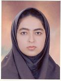

|
|
|
Browsing
Contact Us |
Campaigners |
Face to Face |
Tribune |
Interview |
News |
On the Web |
One Million |
Report
Farsi | Français | German | Italian | Spanish | العربية Also in this section
|
 CODIR Calls for the Immediate Release of Atefeh NabaviWednesday 2 December 2009 Atefeh Nabavi , a female student activist , that had been arrested on 15th June during the protest demonstrations after the presidential election, has been sentenced to 4 years of imprisonment, at the Revolutionary Court presided by Judge Ghomi . Atefeh Nabavi had been charged of "Having relationship with the Iranian People’s Mojahedin Organisation of Iran" and "Participating in the illegal demonstration on 15th June" by district 12 of Revolutionary Court last week. However the Judge dropped the charge of having relationship with the PMOI but she was convicted of the charges such as "disturbing the public order" and "Cahoot and collusion against the regime through participating in illegal demonstration". Nasrin Sotoodeh, the defence lawyer of this student activist, commenting on the heavy sentence passed for her client said: this is the example of an unfair sentence. It is not rational or compatible with any legal norm and practice that Miss.Nabavi being condemned because of her family’s political background. Sotoodeh stated: Against all the judical rules, the investigations and cross examinations in the court session was about Atefeh Nabavi�s family background and the Judge totally ignored the principle of "crime and punishment being personal". Sotoodeh added: Because of the fact that this sentence is unfair, I hope that the appeal court will take into consideration the legal reasoning of this case and declare the innocence of Miss.Nabavi. Because it is not rational that a society condemns its intellectuals to a 4 year imprisonment just for participating in a silent demonstration with the slogan of "where is my vote". Atefeh Nabavi was transfered to the section 209 of Evin Prison after being arrested and then after 95 days, moved to Methadon Quarantine for addicted prisoners of the public section. The passing of the heavy sentence of 4 years imprisonment for this political prisoner has taken place in the circumstances that Iranian courts in recent years hadn�t issued heavy prison sentences against women activists. Committee of Human Rights Reporters considers the issued sentence against Atefeh Nabavi as an unfair and illegal one and calls for the special attention of the international human rights organisations to her dossier. Issuing of such a sentence indicates that the government will now start to issue heavy sentences against women activists. |